Properties, interactions and introductory IR
Week 1 · Use structure to predict an observation
What should you be able to explain?
Explain polarity, donor/acceptor sites and qualitative property trends; interpret a simple IR feature.
Bring these tools into the room
You can identify alcohol, ether, amine, ketone, aldehyde, acid and ester from their local bond patterns.
Separate partial and formal charge

Separate partial and formal charge
Which label describes unequal sharing and which comes from integer Lewis electron bookkeeping?
Follow the electronegative atom
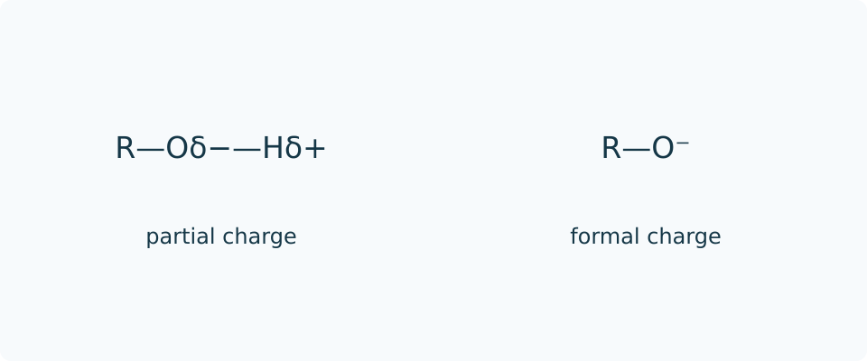
Follow the electronegative atom
An O–H bond is polar toward O even when the molecule is formally neutral.
Explain the C–O polarisation
Explain the C–O polarisation
O attracts the bonding electrons more strongly than C. δ− is not a claim that oxygen has a whole extra electron.
Compare neutral alcohol with alkoxide
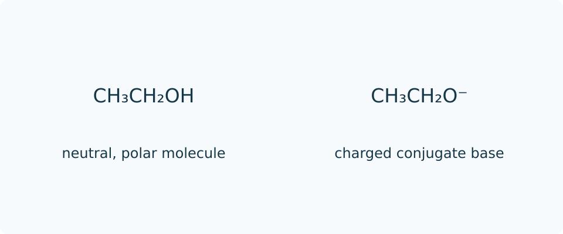
Compare neutral alcohol with alkoxide
The neutral alcohol is polar; the alkoxide has a formal charge as well as polar bonds.
Predict: must a δ− atom carry formal −1?
Apply the ordinary Lewis count to the O atom in ethanol.
Resolve: ethanol oxygen is formally neutral
Its two bonds and two lone pairs give formal charge zero. Partial charge describes electron distribution differently.
Add bond dipoles as directions
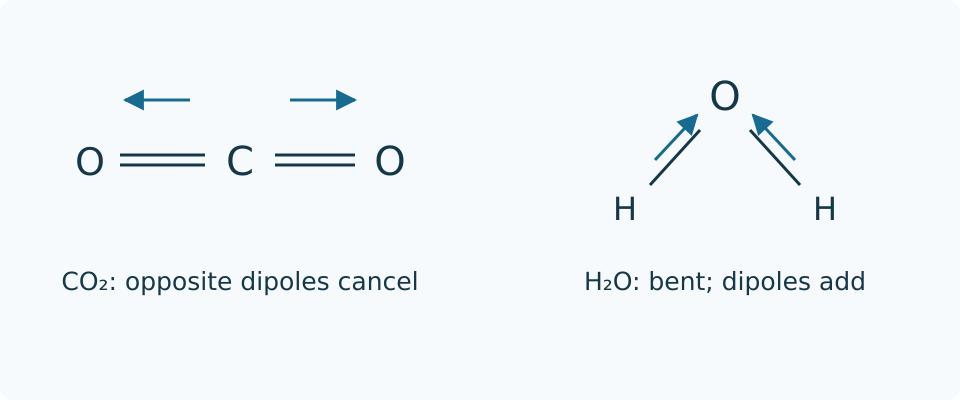
Add bond dipoles as directions
Why do the two C=O bond dipoles in CO₂ cancel while the two O–H dipoles in water do not?
Geometry changes the molecular sum
Geometry changes the molecular sum
Linear CO₂ has opposing equal bond dipoles; bent water has a nonzero vector sum.
A functional-group test is narrower than identity
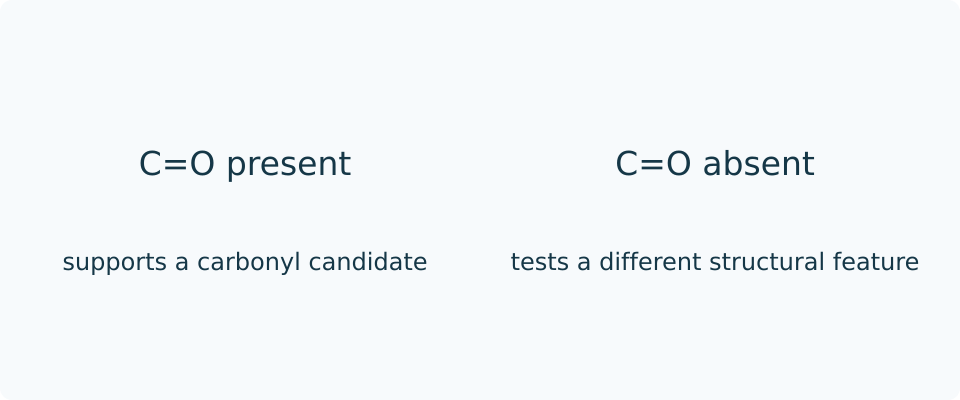
A functional-group test is narrower than identity
Observing or failing to observe C=O tests a structural feature, not the entire identity of the molecule.
Predict: what information is missing?
Someone says a molecule is polar because it has two polar bonds. What else must you know?
Resolve: their spatial arrangement
Bond dipoles may add or cancel. Molecular geometry and symmetry are necessary for the conclusion.
Place the hydrogen-bond contact
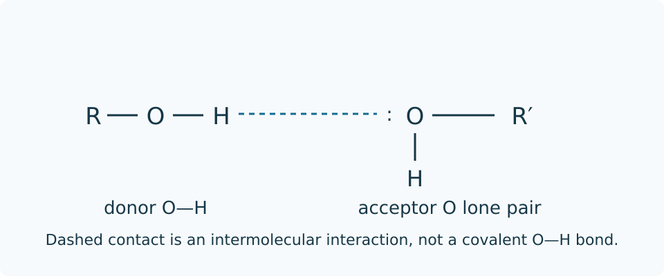
Place the hydrogen-bond contact
Identify donor O–H and acceptor lone pair in the drawn intermolecular interaction.
Let water donate to a carbonyl
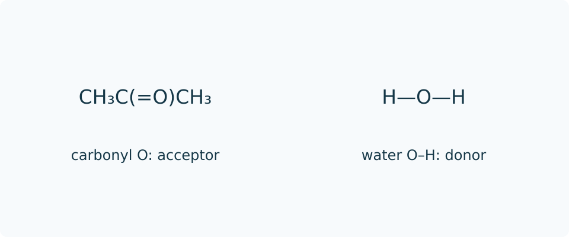
Let water donate to a carbonyl
Propanone oxygen can accept a contact from water O–H. No new covalent C–O or O–H bond is implied.
Keep the two molecules intact
Keep the two molecules intact
A dashed O–H···O contact connects a donor H with a suitable acceptor site on another molecule.
Recognise an amine donor
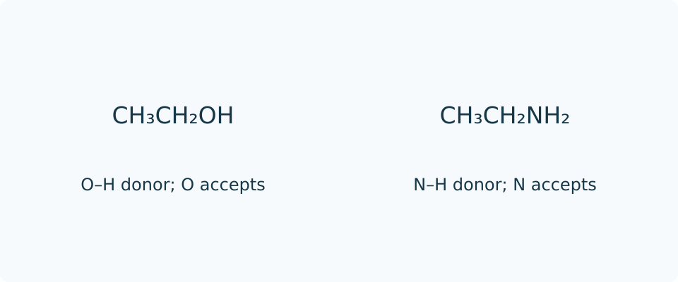
Recognise an amine donor
Ethylamine has N–H donor bonds and a nitrogen lone-pair acceptor. Both count as local features, not a solubility guarantee.
Predict: which part of water points toward ether O?
Choose the partial positive H or partial negative O, and explain your choice.
Resolve: a donor H faces the acceptor
Water supplies an O–H donor; ether supplies the oxygen acceptor. Draw O–H···O, not O···O without context.
Find the tertiary-amine difference
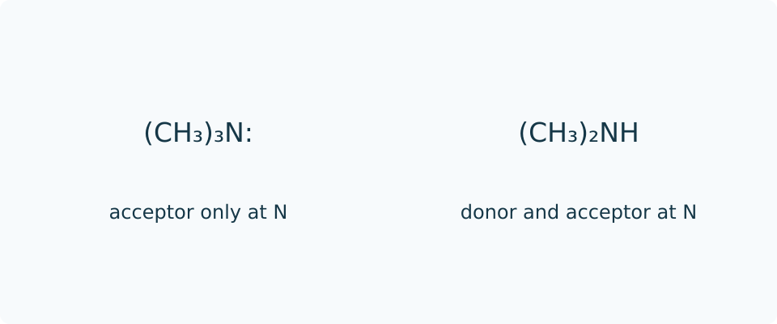
Find the tertiary-amine difference
Trimethylamine can accept at N but has no N–H donor. Dimethylamine has an N–H bond.
Count ester oxygen environments
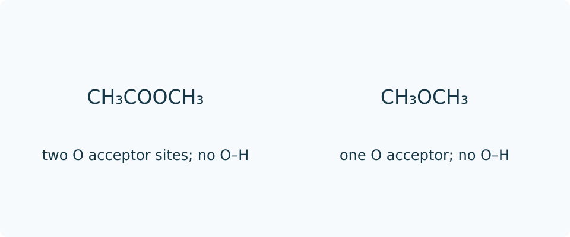
Count ester oxygen environments
An ester has two oxygen environments and no OH donor. A simple ether has one oxygen environment.
Predict: does protonating an amine retain its lone pair?
The original pair forms a new N–H bond. Can that same pair still act as an acceptor?
Resolve: not the original pair
Ordinary ammonium N has four bonds and no available nitrogen lone pair. Protonation changes the donor/acceptor inventory.
Compare molecules of similar size

Compare molecules of similar size
Why are ethanol and dimethyl ether a useful pair for discussing intermolecular attractions?
Read a property value with its conditions
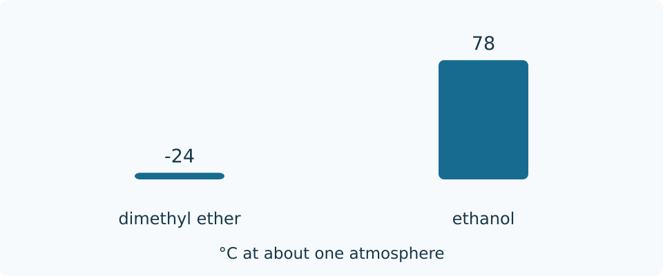
Read a property value with its conditions
Approximate normal boiling temperatures are 78 ° C and −24 ° C. Pressure must be comparable.
Predict: what breaks during boiling?
Do ethanol molecules normally lose their covalent C–O bonds when they pass into the vapour?
Resolve: intact molecules separate
Boiling primarily overcomes attractions between molecules. It is not ordinary decomposition into atoms or bond fragments.
Balance the polar head against the chain
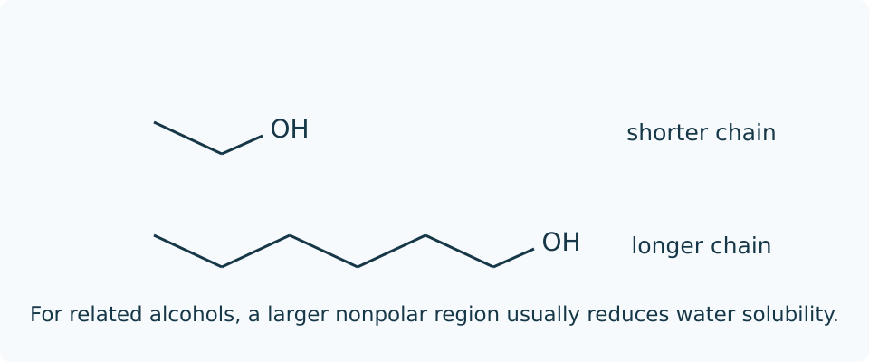
Balance the polar head against the chain
For related alcohols, what changes as the hydrocarbon region becomes larger?
Make the comparison quantitative enough to inspect
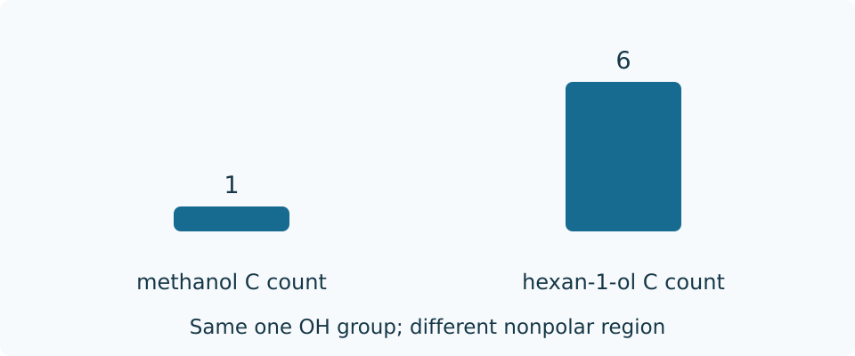
Make the comparison quantitative enough to inspect
Methanol has one carbon per OH; hexan-1-ol has six carbons per OH. Their nonpolar regions differ substantially.
Explain a qualitative water trend
Explain a qualitative water trend
A larger nonpolar region generally lowers compatibility with water within this related series.
Ionisation changes the hydration interaction
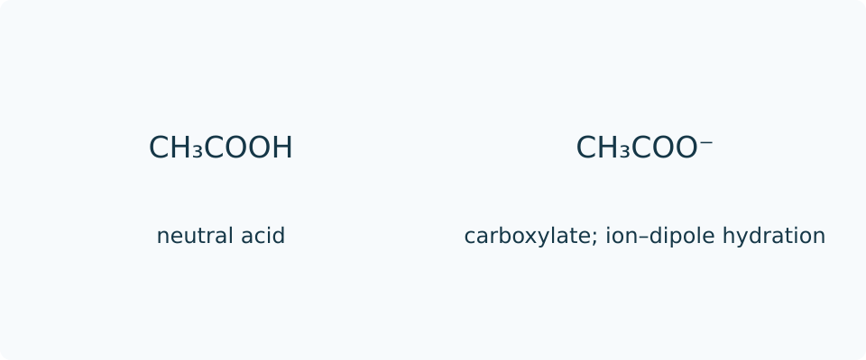
Ionisation changes the hydration interaction
Carboxylate can engage in ion–dipole interactions. Neutral acid and its anion need not share a solubility.
Describe what is vibrating
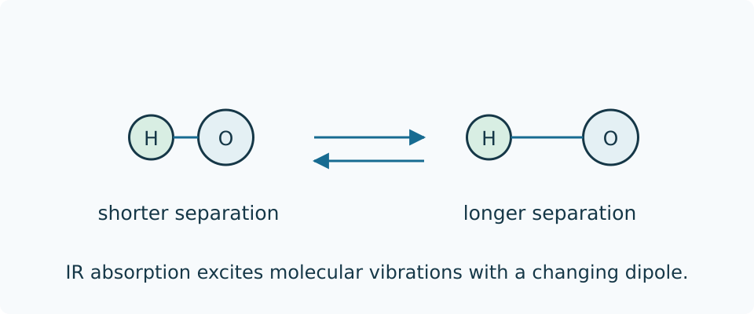
Describe what is vibrating
An O–H stretching vibration changes separation without ordinarily breaking the bond.
Read transmittance first
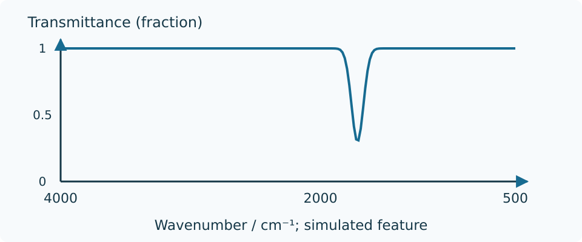
Read transmittance first
Lower transmittance means more radiation has been absorbed at that wavenumber.
Connect IR to a changing dipole
Connect IR to a changing dipole
The relevant vibration must change the molecular dipole to absorb in this simple interpretation.
Change the ordinate, not the molecule
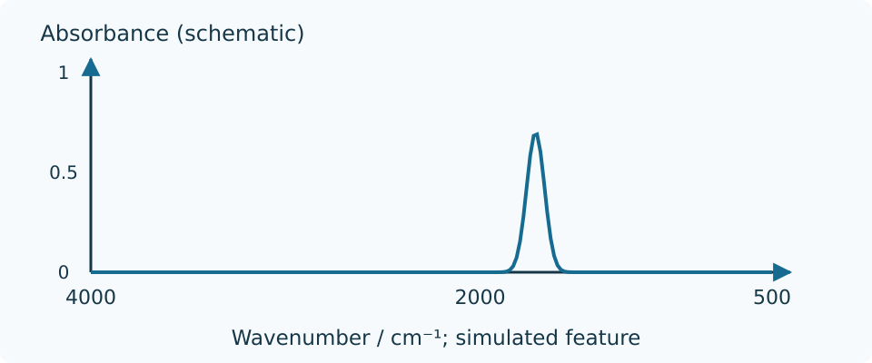
Change the ordinate, not the molecule
An absorbance feature points upward for the same underlying absorption that produces a transmission dip.
Predict: is a tall upward IR feature impossible?
Your classmate expects only downward peaks. Which axis label would explain the different plot?
Resolve: absorbance uses the other direction
Check whether the ordinate is absorbance or transmittance before interpreting feature direction.
Inspect axes before features
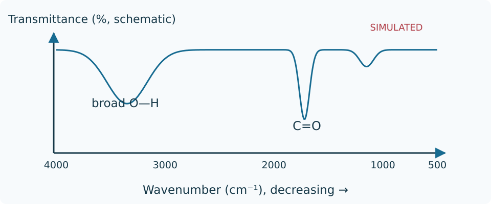
Inspect axes before features
Locate high and low wavenumber. On this conventional display, values decrease to the right.
Recognise a broad alcohol region
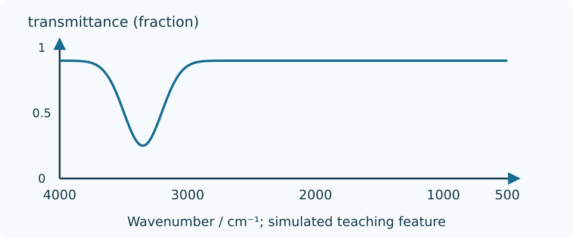
Recognise a broad alcohol region
The simulated alcohol O–H feature is broad around 3200–3600 cm⁻¹, rather than a unique sharp line.
Recognise carbonyl evidence
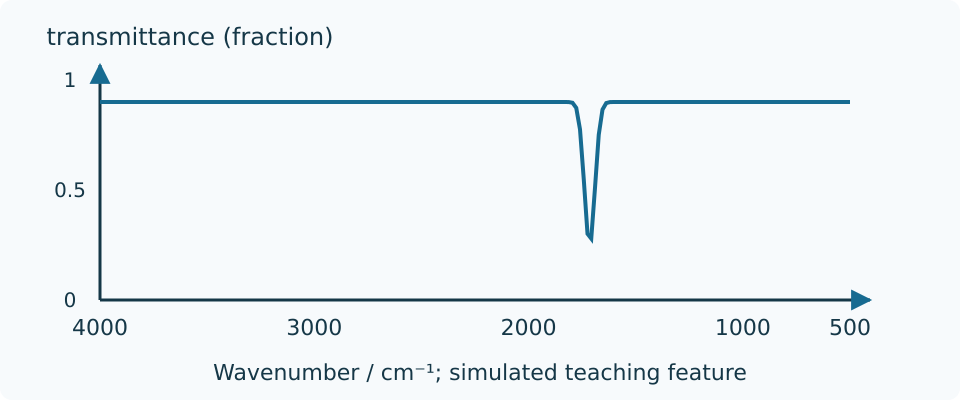
Recognise carbonyl evidence
A strong carbonyl absorption often occurs within roughly 1650–1800 cm⁻¹; environment shifts its position.
Predict: does 1715 cm⁻¹ uniquely identify propanone?
Consider whether other ketones, aldehydes or related carbonyl compounds can absorb in the same region.
Resolve: many candidates share C=O
The band supports a carbonyl feature. Further observations are needed to identify one complete structure.
Compare the candidate predictions
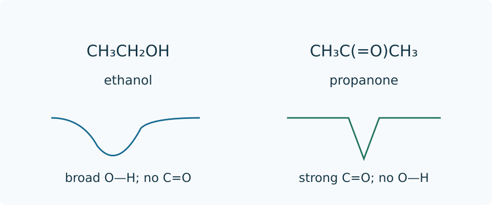
Compare the candidate predictions
Which candidate predicts both a carbonyl feature and no alcohol OH region?
Test a named bond in each drawing
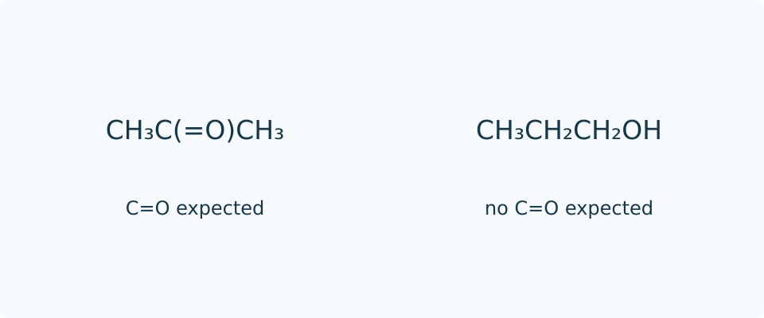
Test a named bond in each drawing
Propanone contains C=O; propan-1-ol lacks it. Predict the contrast before looking at data.
Try a second carbonyl candidate
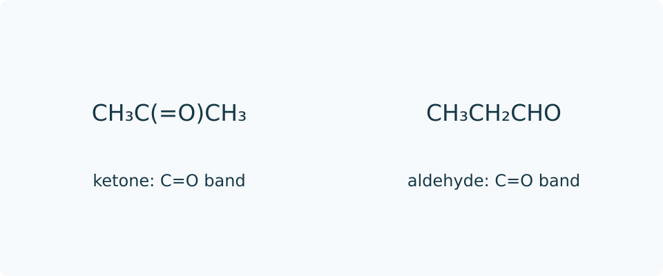
Try a second carbonyl candidate
Propanone and propanal both have a carbonyl. One common band does not distinguish every pair.
Predict: could a wet sample confuse OH interpretation?
What extra broad feature might water introduce even when the organic target lacks OH?
Resolve: water can add an OH absorption
Sample context matters. Check a suitable reference and other evidence rather than assigning the broad feature automatically.
Name the interaction altered by charge

Name the interaction altered by charge
How does hydration of carboxylate differ from that of its neutral acid?
Keep acid and alcohol OH environments distinct
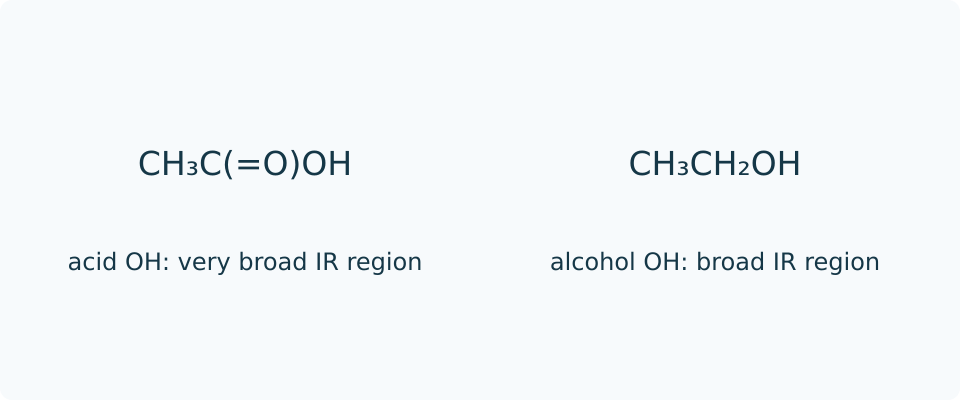
Keep acid and alcohol OH environments distinct
Both contain O–H, but a carboxylic-acid OH often has a particularly broad IR region.
Inspect the acid OH region
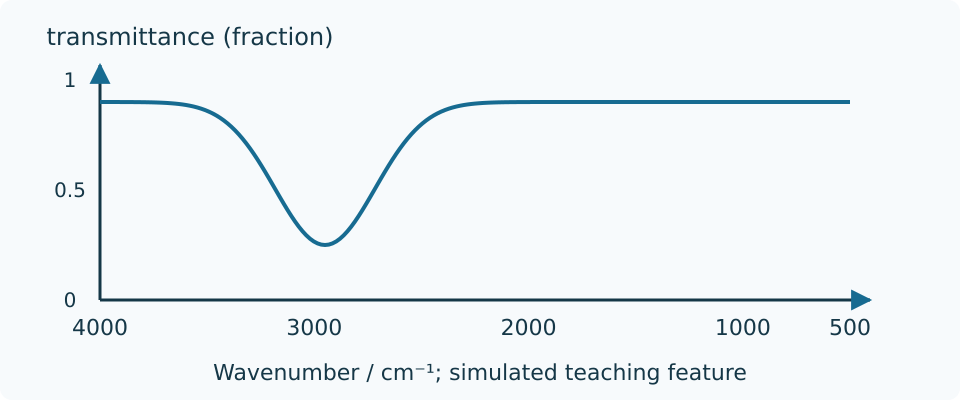
Inspect the acid OH region
This simulated broad acid feature extends across a substantial range, unlike a narrow carbonyl dip.
Predict: what extra data would extraction need?
Name two quantities beyond aqueous pH and pKa that affect recovered amount.
Resolve: partition and volume matter
Partition coefficients, phase volumes, initial amount and losses are relevant. A speciation curve alone cannot predict isolated mass.
Combine the tools in one explanation
Compare a carbonyl candidate with a noncarbonyl candidate using both interactions and IR predictions.
Your next independent work
Use the standalone practice and worked checks, then the self-check. Required core problems and optional transfer work are labelled separately.
One-sentence exit explanation
Write one chemical claim, the feature that supports it and one limit of the inference.
The reading guide provides optional textbook support; no textbook is needed to attempt the local practice.